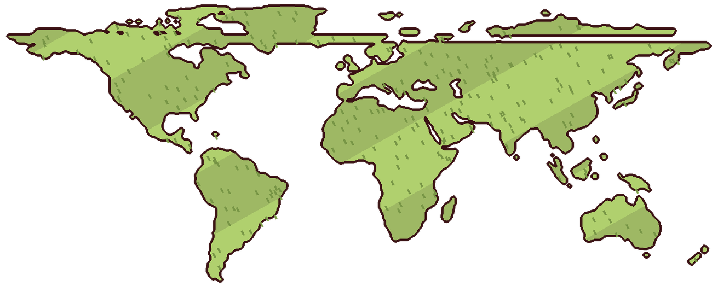

Global heat map.
Where in the world are websites reachable right now? Tap a dot.
ReachabilityResponse time

LONDONNEW YORKSAO PAULOJOHANNESBURGMUMBAITOKYOSYDNEYLOS ANGELESSINGAPOREDUBAI90% or more reached70 to 90%Under 70%
78%Mumbai, IndiaMost sites answered from here, but some did not.Typical time 420 ms